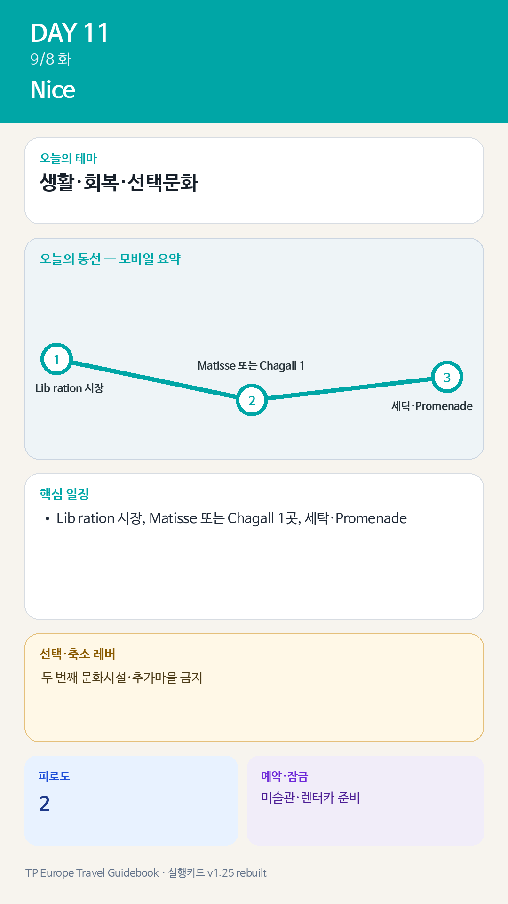

Day 11 · 9/8 화 · Nice
오늘의 감사 요약
- 핵심 실행
- 회복·시장·미술관 1곳
- 권장 출발
- 느린 시작
- 완충
- 세탁·렌터카 준비 2시간 보호
- 최고 리스크
- 회복일 과밀화
- 우선 삭제
- 두 번째 미술관·추가마을
- 대체안
- 숙소생활·카페
- 식사·휴식
- Libération 시장·숙소식
- 잠금 필요
- 미술관·렌터카 준비
피로도
이날은 원고에 피로도 표기가 없다. 추정값을 넣지 않았다.
시간표
| 07:30–08:15 | Jason 선택 러닝 또는 늦잠 | 다리 피로가 있으면 완전휴식 |
| 09:20–10:30 | Marché de la Libération | 실제 장보기·9/9 차량간식 준비 |
| 10:45–12:30 | Matisse Museum 또는 Chagall Museum | 한 곳만. Matisse 선택 시 Cimiez 정원 결합 |
| 12:45–13:30 | 가벼운 점심 | 시장재료 또는 숙소권 점심 |
| 13:30–15:30 | 숙소 휴식·세탁 | 체크아웃·렌터카 서류·짐 재분류 |
| 15:30–17:30 | 선택 모듈 | Promenade 카페, 해변산책, Julia 수영 중 1개 |
| 17:30–18:30 | 9/9 준비 | 물·간식·면허·예약번호·주유/보험 확인 |
| 19:30–21:00 | Nice 마지막 저녁 | 과식하지 않고 이동일 전 음주 최소화 |
카드 이미지 보기

카드의 지도영역은 일정 순서를 보여주는 개요이며 내비게이션이 아닙니다. 실제 도보·운전 경로는 Google Maps에서 다시 계산하세요.